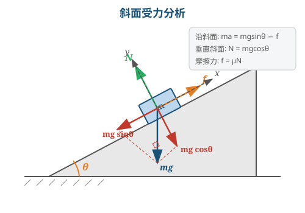

任何物体在不受外力作用时（或合力为零），保持静止或匀速直线运动状态。
意义：(1) 定义了惯性参考系——牛顿定律成立的参考系；(2) 定义了力——改变运动状态的原因。
分量形式：$F_x = ma_x,\quad F_y = ma_y,\quad F_z = ma_z$
自然坐标系形式：$F_\tau = ma_\tau = m\frac{\dd v}{\dd t},\quad F_n = ma_n = m\frac{v^2}{\rho}$
同时、等大、反向、共线、分别作用在两个不同物体上。
| 力 | 公式 | 说明 |
|---|---|---|
| 万有引力 | $F = G\frac{m_1m_2}{r^2}$ | $G=6.67\times10^{-11}\,\text{N·m}^2/\text{kg}^2$ |
| 重力 | $\vv{P} = m\vv{g}$ | $g\approx9.8\,\text{m/s}^2$（地球表面） |
| 弹力（胡克定律） | $F = -kx$ | $k$ 为劲度系数，$x$ 为形变量 |
| 静摩擦力 | $f_s \leq \mu_s N$ | $\mu_s$ 为静摩擦系数 |
| 滑动摩擦力 | $f_k = \mu_k N$ | 方向与相对滑动方向相反 |
| 线性阻力 | $f = -bv$ | 低速流体阻力 |
| 二次阻力 | $f = -cv^2$ | 高速空气阻力 |
对 $m_1$（取向下为正）：$m_1 g - T = m_1 a$
对 $m_2$（取向上为正）：$T - m_2 g = m_2 a$
两式相加：$(m_1-m_2)g = (m_1+m_2)a$
$$a = \frac{m_1-m_2}{m_1+m_2}g,\quad T = \frac{2m_1 m_2}{m_1+m_2}g$$$m\frac{\dd v}{\dd t} = -bv \implies \frac{\dd v}{v} = -\frac{b}{m}\dd t$
积分：$\ln v - \ln v_0 = -\frac{b}{m}t$
$$v = v_0 e^{-bt/m}$$终端速度为 $0$（指数衰减），$\tau = m/b$ 为时间常数。
最高点：$mg + N = m\frac{v^2}{R}$
临界条件 $N=0$：$mg = m\frac{v_{min}^2}{R}$
$$v_{min} = \sqrt{gR}$$在加速度为 $\vv{a}_0$ 的非惯性系中，为使牛顿定律形式不变，引入惯性力：
$$\vv{F}^* = -m\vv{a}_0$$修正后的运动方程：$\vv{F} + \vv{F}^* = m\vv{a}'$（$\vv{a}'$ 为相对非惯性系的加速度）
若非惯性系以 $\vv{a}_0$ 做平动加速，惯性力 $\vv{F}^* = -m\vv{a}_0$，方向与 $\vv{a}_0$ 相反。
在以角速度 $\omega$ 转动的参考系中：
$$\vv{F}_{cf} = m\omega^2 r\,\hat{\vv{r}}$$方向沿径向向外（离心），大小 $F_{cf} = m\omega^2 r$。
以地面为参考系：$N - mg = ma_0$，故 $N = m(g+a_0)$
在电梯参考系中人静止，惯性力 $F^* = ma_0$（向下）：
$N - mg - ma_0 = 0$，故 $N = m(g+a_0)$
| 约束类型 | 条件 |
|---|---|
| 不可伸长绳 | 两端加速度相等 |
| 轻绳 | 绳中张力处处相等 $T=\text{const}$ |
| 轻滑轮+轻绳 | 两侧张力相等 |
| 滑动摩擦 | $f=\mu N$ |
| 纯滚动 | $v_C=R\omega$，$a_C=R\alpha$ |
A沿斜面上滑加速阶段（B下降）：
对B：$m_0 g-T=m_0 a$
对A：$T-(M+m_0)g\sin\theta=(M+m_0)a$
$a=\dfrac{m_0 g-(M+m_0)g\sin\theta}{m_0+M+m_0}=\dfrac{m_0-(M+m_0)\sin\theta}{M+2m_0}g$
当 $m_0 > (M+m_0)\sin\theta$ 时 $a>0$，即 A 加速上滑。当B落地后只剩A在斜面上减速。
运动方程：$mg-bv^2=m\dfrac{\dd v}{\dd t}$
终端速度（$a=0$）：$v_t=\sqrt{mg/b}$
分离变量：$\dfrac{m\dd v}{mg-bv^2}=\dd t$，即 $\dfrac{\dd v}{v_t^2-v^2}=\dfrac{g}{v_t^2}\dd t$
利用部分分式或双曲正切：
$$v(t)=v_t\tanh\left(\frac{gt}{v_t}\right)$$当 $t\to\infty$ 时 $v\to v_t$；当 $t\to0$ 时 $v\approx gt$（自由落体）。
取 $r$ 到 $r+\dd r$ 的微元 $\dd m=(m/L)\dd r$
向心力由张力差提供：$T(r)-T(r+\dd r)=\dd m\cdot\omega^2 r$
即 $-\dd T=(m/L)\omega^2 r\dd r$
边界条件：$T(L)=0$（绳末端自由端）
$$T(r)=\frac{m\omega^2}{2L}(L^2-r^2)$$最大张力在 $r=0$（轴端）：$T_{\max}=m\omega^2 L/2$
倾角 $\theta$，质量 $m$，动摩擦系数 $\mu$
不滑动条件：$\tan\theta\leq\mu_s$
匀速下滑：$\mu_k=\tan\theta$
加速下滑：$a=g(\sin\theta-\mu_k\cos\theta)$
匀速推上去的最小力：$F=mg(\sin\theta+\mu_k\cos\theta)$（沿斜面方向推）

质量 $m$ 的小球用长 $L$ 的绳在水平面上做圆周运动，绳与竖直方向夹角 $\theta$：
$T\cos\theta=mg$，$T\sin\theta=m\omega^2 L\sin\theta$
$\omega=\sqrt{g/(L\cos\theta)}$，$T=2\pi\sqrt{L\cos\theta/g}$
拱桥顶端（向心力向下）：$mg-N=mv^2/R$ → $N=m(g-v^2/R)$
$v=\sqrt{gR}$ 时 $N=0$（飞离地面）
凹桥底部（向心力向上）：$N-mg=mv^2/R$ → $N=m(g+v^2/R)$
在非惯性系中：$T-mg-ma_0=0$（人为引入惯性力 $-ma_0$）
整体法：将多个物体视为一个系统，分析系统所受外力的合力。
隔离法：将单个物体从系统中隔离出来，分析它所受的全部力（含内力）。
最常用策略：先整体后隔离——先用整体法求加速度，再隔离某个物体求内力。
第一步：整体法求 $\mu_2$
将 $m_1 + m_2$ 视为一个整体，沿斜面方向（取下滑为正）：
$$（m_1+m_2)g\sin\theta - \mu_2(m_1+m_2)g\cos\theta = 0$$匀速下滑，$a=0$。解得：
$$\mu_2 = \tan\theta$$第二步：隔离 $m_1$ 求 $\mu_1$ 的最小值
对 $m_1$，它做匀速运动（$a=0$）。沿斜面方向：
$$m_1 g\sin\theta - f_1 = 0$$其中 $f_1$ 是 $m_2$ 对 $m_1$ 的静摩擦力（沿斜面向上）。
垂直斜面方向：$N_1 = m_1 g\cos\theta$
$f_1 = m_1 g\sin\theta$，需满足 $f_1 \leq \mu_1 N_1$：
$$m_1 g\sin\theta \leq \mu_1 m_1 g\cos\theta$$ $$\mu_1 \geq \tan\theta$$所以 $\mu_1$ 至少为 $\tan\theta$ 才能保证两者一起运动。
设加速度为 $a$（$m_1$ 向下，$m_2$ 沿斜面向上），绳中张力为 $T$。
对 $m_1$（隔离法）：取向下为正
$$m_1 g - T = m_1 a \quad \cdots(1)$$对 $m_2$（隔离法）：取沿斜面向上为正
$$T - m_2 g\sin\theta = m_2 a \quad \cdots(2)$$约束条件：绳不可伸长 → 两端加速度大小相同。
(1)+(2) 消去 $T$：
$$m_1 g - m_2 g\sin\theta = (m_1 + m_2)a$$ $$\boxed{a = \frac{m_1 - m_2\sin\theta}{m_1 + m_2}\,g}$$代回 (1) 得张力：
$$T = m_1(g - a) = m_1 g\left(1 - \frac{m_1 - m_2\sin\theta}{m_1+m_2}\right) = \frac{m_1 m_2(1+\sin\theta)}{m_1+m_2}\,g$$ $$\boxed{T = \frac{m_1 m_2(1+\sin\theta)}{m_1+m_2}\,g}$$讨论：当 $m_1 = m_2\sin\theta$ 时 $a=0$（平衡）；当 $m_1 < m_2\sin\theta$ 时 $a<0$（$m_2$ 实际沿斜面下滑）。
设 $m_1$ 侧下降，$m_2$ 侧上升，加速度为 $a$。设左绳张力 $T_1$，右绳张力 $T_2$。
对 $m_1$：$m_1 g - T_1 = m_1 a$
对 $m_2$：$T_2 - m_2 g = m_2 a$
对 $M$（水平方向）：$T_1 - T_2 - \mu Mg = Ma$
三式相加：
$$(m_1 - m_2)g - \mu Mg = (m_1 + m_2 + M)a$$ $$\boxed{a = \frac{(m_1 - m_2 - \mu M)g}{m_1 + m_2 + M}}$$当 $m_1 - m_2 \leq \mu M$ 时系统静止不动（$a \leq 0$，实际为静摩擦）。
胡克定律：$F = -kx$，其中 $k$ 为劲度系数（弹簧常数），$x$ 为形变量（伸长/压缩量）。
弹簧力的关键特性：
力改变 → 加速度立即改变（牛顿第二定律的瞬时性）。
但位移和速度不能突变（需要有限时间累积）。
分析步骤：
剪断前：弹簧伸长量 $x_0 = mg/k$，弹簧拉力 $F = kx_0 = mg$（向上），与重力平衡。
剪断瞬间：弹簧被剪断 → 弹簧力立即消失 → 物体只受重力。
$$a = g \quad \text{（向下，自由落体）}$$注意：整个弹簧+物体系统自由下落，弹簧上端和下端的加速度都是 $g$。
剪断前的分析：
对B：$T = mg$（绳子张力等于B的重力）
对A：$kx_0 = mg + T = 2mg$（弹簧拉力 = A的重力 + 绳的拉力）
所以弹簧伸长量 $x_0 = 2mg/k$，弹簧力 $F_{弹} = 2mg$（向上）。
剪断瞬间：
绳子张力突然消失（$T = 0$），但弹簧力不变（弹簧形变量来不及改变，仍为 $x_0$，弹簧力仍为 $2mg$）。
对B：只受重力 $mg$（绳断了，弹簧不与B直接相连）
$$\boxed{a_B = g \quad \text{（向下）}}$$对A：受力 = 弹簧力（$2mg$ 向上）$-$ 重力（$mg$ 向下）$= mg$（向上）
$$\boxed{a_A = g \quad \text{（向上）}}$$两弹簧 $k_1,k_2$ 串联，等效劲度系数 $k_{eq}$：
串联时两弹簧受力相同 $F$，总伸长量 $= x_1 + x_2 = F/k_1 + F/k_2$
$$\frac{1}{k_{eq}} = \frac{1}{k_1} + \frac{1}{k_2} \implies k_{eq} = \frac{k_1 k_2}{k_1 + k_2}$$串联变软：$k_{eq} < \min(k_1, k_2)$
两弹簧 $k_1,k_2$ 并联，等效劲度系数 $k_{eq}$：
并联时两弹簧形变量相同 $x$，总力 $= k_1 x + k_2 x$
$$k_{eq} = k_1 + k_2$$并联变硬：$k_{eq} > \max(k_1, k_2)$
| 连接方式 | 等效劲度系数 |
|---|---|
| $n$ 个弹簧串联 | $\dfrac{1}{k_{eq}} = \displaystyle\sum_{i=1}^{n}\frac{1}{k_i}$ |
| $n$ 个相同弹簧（$k_0$）串联 | $k_{eq} = k_0/n$ |
| $n$ 个弹簧并联 | $k_{eq} = \displaystyle\sum_{i=1}^{n}k_i$ |
| $n$ 个相同弹簧（$k_0$）并联 | $k_{eq} = nk_0$ |
串联弹簧中两根弹簧受力相同，均为 $F = mg = 60\,\text{N}$。
$k_1$ 的伸长量：$x_1 = F/k_1 = 60/200 = 0.3\,\text{m}$
$k_2$ 的伸长量：$x_2 = F/k_2 = 60/300 = 0.2\,\text{m}$
总伸长量：$x = x_1 + x_2 = 0.5\,\text{m}$
验证：$k_{eq} = \frac{200\times300}{200+300} = 120\,\text{N/m}$，$x = F/k_{eq} = 60/120 = 0.5\,\text{m}$ $\checkmark$
剪断前的平衡分析：
对B：下方弹簧拉力 $F_2 = mg$（向上），即下方弹簧伸长 $x_2 = mg/(2k)$
对A：上方弹簧拉力 $F_1$（向上）$= 2mg +$ 下方弹簧对A的拉力（向下）$= 2mg + mg = 3mg$
上方弹簧伸长 $x_1 = 3mg/k$
剪断上方弹簧瞬间：
上方弹簧力消失（弹簧被剪断）；下方弹簧力不变（仍为 $mg$，因为下方弹簧形变量来不及变化）。
对A：受力 = 重力 $2mg$（向下）$+$ 下方弹簧拉力 $mg$（向下）$= 3mg$（向下）
$$a_A = \frac{3mg}{2m} = \frac{3g}{2} \quad \text{（向下）}$$对B：受力 = 重力 $mg$（向下）$+$ 下方弹簧拉力 $mg$（向上）$= 0$
$$a_B = 0$$物理图像：剪断瞬间B处于平衡状态（弹簧力恰好平衡重力），加速度为零；而A因为失去了上方弹簧的支撑，受到重力和下方弹簧向下拉力的合力而加速下落。
在以角速度 $\vv{\omega}$ 旋转的非惯性系中，物体除了受真实力外，还需加入两个惯性力：
在赤道（$\phi=0$）Coriolis力水平分量为零，Foucault摆不转动。在两极（$\phi=90°$）旋转周期恰好24小时。
线性加速参考系（加速度 $\vv{a}_0$）：
$$m\vv{a}' = \vv{F} + (-m\vv{a}_0)$$只需添加一个惯性力 $\vv{F}^* = -m\vv{a}_0$。
旋转参考系（完整形式）：
$$m\vv{a}' = \vv{F} + m\omega^2\vv{r}_\perp - 2m\vv{\omega}\times\vv{v}'$$真实力 + 离心力 + Coriolis力
在电梯（非惯性系）中，物体静止。平衡方程：
$$T - mg - ma = 0 \implies T = m(g+a)$$"示数增大"——等效重力加速度 $g'=g+a$。
若电梯向下加速 $a$（或自由落体 $a=g$），则 $T=m(g-a)$。$a=g$ 时 $T=0$（完全失重）。
物体在流体中低速运动时，阻力与速度成正比：$f = -bv$（$b$ 为阻力系数）。
末速度（终端速度）：当合力为零时 $mg = bv_T$，故：
$$v_T = \frac{mg}{b}$$从静止下落的速度：运动方程 $m\dfrac{\dd v}{\dd t} = mg - bv$
分离变量并积分：
$$v(t) = v_T\left(1 - e^{-bt/m}\right) = v_T\left(1 - e^{-t/\tau}\right)$$其中 $\tau = m/b$ 为时间常数，物理意义：
高速运动时阻力与速度平方成正比：$f = cv^2$（方向与运动方向相反）。
末速度：$mg = cv_T^2$，故：
$$v_T = \sqrt{\frac{mg}{c}}$$从静止下落的速度：$m\dfrac{\dd v}{\dd t} = mg - cv^2$
$$v(t) = v_T\tanh\left(\frac{gt}{v_T}\right)$$当 $t \to 0$ 时 $v \approx gt$（自由落体）；当 $t \to \infty$ 时 $v \to v_T$。
雨滴质量：$m = \frac{4}{3}\pi r^3\rho = \frac{4}{3}\pi(10^{-3})^3\times1000 \approx 4.19\times10^{-6}\,\text{kg}$
阻力系数：$c = 0.5\times1.2\times0.45\times\pi\times(10^{-3})^2 \approx 8.48\times10^{-7}\,\text{kg/m}$
$$v_T = \sqrt{\frac{mg}{c}} = \sqrt{\frac{4.19\times10^{-6}\times9.8}{8.48\times10^{-7}}} \approx 6.9\,\text{m/s}$$这解释了为什么雨滴不会以很高速度砸到地面——空气阻力限制了下落速度。
$v(t) = v_0 e^{-bt/m}$
$$x = \int_0^\infty v_0 e^{-bt/m}\,\dd t = v_0\cdot\frac{m}{b} = \frac{mv_0}{b}$$虽然速度永远不精确为零，但总路程是有限值 $x_{max} = mv_0/b$。
轻绳跨过无质量的光滑定滑轮，两端分别悬挂质量 $m_1 > m_2$ 的物体。
约束：绳长不变 → 两侧加速度大小相等、方向相反。
$$a = \frac{(m_1 - m_2)g}{m_1 + m_2}$$ $$T = \frac{2m_1 m_2 g}{m_1 + m_2}$$重要性质：
设加速度 $a$（B下降，A沿斜面上升），绳张力 $T$。
对B（取向下为正）：$m_B g - T = m_B a \quad\cdots(1)$
对A（取沿斜面向上为正）：$T - m_A g\sin\theta = m_A a \quad\cdots(2)$
(1)+(2)：
$$a = \frac{m_B - m_A\sin\theta}{m_A + m_B}\,g$$ $$T = \frac{m_A m_B(1+\sin\theta)}{m_A + m_B}\,g$$设绳从钉子到物体的长度为 $l$，拉出端的长度增加速率为 $u$。绳总长不变：
$$\frac{\dd l}{\dd t} = -u \quad\text{（物体端绳变短）}$$物体的竖直位置 $y = l\cos\theta$，水平位置 $x = l\sin\theta$。
对于钉子位置固定的情况，物体上升速度（沿绳方向）为 $v_{绳} = u$。
物体竖直方向速度分量：$v_y = u\cos\theta$（当 $\theta$ 变化较慢时的近似）。
精确分析需要考虑 $\theta$ 的变化，但对于绳绕过光滑钉子的简单情况：沿绳方向速度等于拉绳速度 $u$，物体竖直速度 $v = u/\cos\theta$。
物体沿曲面运动时，曲面对物体施加法向支持力 $N$。脱离的条件是：
$$N = 0$$当计算得到 $N < 0$ 时，说明物体已经脱离曲面（曲面不能提供拉力）。
脱离后物体做抛体运动，不再沿曲面运动。
设物体滑到与竖直方向成 $\theta$ 角的位置。取沿径向（指向球心）为正方向。
法向方程（向心方向）：
$$mg\cos\theta - N = \frac{mv^2}{R}$$能量守恒（从顶端到角度 $\theta$，下降高度 $h = R - R\cos\theta = R(1-\cos\theta)$）：
$$\frac{1}{2}mv^2 = mgR(1-\cos\theta)$$ $$v^2 = 2gR(1-\cos\theta)$$代入法向方程：
$$mg\cos\theta - N = \frac{m\cdot 2gR(1-\cos\theta)}{R} = 2mg(1-\cos\theta)$$ $$N = mg\cos\theta - 2mg(1-\cos\theta) = mg(3\cos\theta - 2)$$脱离条件 $N = 0$：
$$3\cos\theta - 2 = 0 \implies \cos\theta = \frac{2}{3}$$ $$\boxed{\theta = \arccos\frac{2}{3} \approx 48.2°}$$脱离速度：
$$v^2 = 2gR\left(1 - \frac{2}{3}\right) = \frac{2gR}{3}$$ $$\boxed{v = \sqrt{\frac{2gR}{3}}}$$脱离高度：距球心高度 $h = R\cos\theta = 2R/3$，即在球顶以下 $R/3$ 处脱离。
从最高点到最低点，下降高度 $h = 2R$（直径）。
能量守恒：
$$\frac{1}{2}mv^2 = mg\cdot 2R \implies v^2 = 4gR$$最低点法向方程（向心方向向上）：
$$N - mg = \frac{mv^2}{R} = \frac{m\cdot 4gR}{R} = 4mg$$ $$\boxed{N = 5mg}$$更一般地，若从高度 $h$ 处释放：$N = mg + 2mgh/R$
| 连接方式 | 等效劲度系数 | 特点 |
|---|---|---|
| 串联 | $\dfrac{1}{k_{eq}} = \dfrac{1}{k_1} + \dfrac{1}{k_2}$ | 变软，$k_{eq} < \min(k_1,k_2)$ |
| 并联 | $k_{eq} = k_1 + k_2$ | 变硬，$k_{eq} > \max(k_1,k_2)$ |
记忆口诀：弹簧串联像电阻并联，弹簧并联像电阻串联——"反着来"。
剪断前平衡分析：
对B：弹簧2拉力 $F_2 = mg$（向上），伸长量 $x_2 = mg/k_2$
对A：弹簧1拉力 $F_1 = mg + F_2 = 2mg$（向上），伸长量 $x_1 = 2mg/k_1$
剪断弹簧1的瞬间：
弹簧1被剪断 → 弹簧1的力立即消失
弹簧2未被剪断 → 弹簧2的形变量不能突变，弹簧2的力仍为 $mg$
对A：受力 = 重力 $mg$（向下）+ 弹簧2对A的拉力 $mg$（向下）= $2mg$（向下）
$$a_A = \frac{2mg}{m} = 2g \quad\text{（向下）}$$对B：受力 = 重力 $mg$（向下）+ 弹簧2对B的拉力 $mg$（向上）= $0$
$$a_B = 0$$B在剪断瞬间加速度为零——弹簧2的拉力恰好平衡B的重力。
剪断前：弹簧伸长量 $x_0 = 2mg/k$，弹簧力 $= 2mg$（向上），绳张力 $T = mg$
剪断绳的瞬间：
绳的张力立即消失（$T = 0$），但弹簧力不变（仍为 $2mg$，因形变量来不及变化）。
对A：弹簧力 $2mg$（向上）$-$ 重力 $mg$（向下）$= mg$（向上）
$$a_A = g \quad\text{（向上）}$$对B：只受重力
$$a_B = g \quad\text{（向下，自由落体）}$$物体在弹簧系统中做微小振动时，振动周期 $T = 2\pi\sqrt{m/k_{eq}}$。
确定 $k_{eq}$ 的方法：将物体偏离平衡位置 $x$，求回复力 $F = -k_{eq}x$。
水平传送带以恒定速度 $v_b$ 运动，物体（质量 $m$）从静止放上传送带，动摩擦系数 $\mu_k$。
阶段1（$v_{物} < v_b$）：物体速度小于传送带速度
阶段2（$v_{物} = v_b$）：物体与传送带速度相同
阶段3（若物体被额外加速至 $v_{物} > v_b$）：
物体初速 $v_0 = 6 > v_b = 2$，物体相对传送带向前滑动，摩擦力向后。
阶段1（$v > v_b = 2$）：$a = -\mu_k g = -0.4\times9.8 = -3.92\,\text{m/s}^2$
减速到 $v_b$ 的时间：$t_1 = (v_0 - v_b)/|a| = (6-2)/3.92 \approx 1.02\,\text{s}$
阶段1走过的距离：$x_1 = v_0 t_1 + \frac{1}{2}a t_1^2 = 6(1.02) + \frac{1}{2}(-3.92)(1.02)^2 \approx 4.08\,\text{m}$
$x_1 \approx 4.08 > L = 4\,\text{m}$，说明物体在减速到 $v_b$ 之前就到达了右端。
实际在右端时：$v^2 = v_0^2 + 2aL = 36 + 2(-3.92)(4) = 36 - 31.36 = 4.64$
$$v = \sqrt{4.64} \approx 2.15\,\text{m/s}$$假设A和B一起运动（无相对滑动），系统加速度：
$$a = \frac{F}{m_A + m_B}$$隔离A：A的加速度由B对A的静摩擦力提供：
$$f_s = m_A a = \frac{m_A F}{m_A + m_B}$$不滑动条件：$f_s \leq \mu_s m_A g$
$$\frac{m_A F}{m_A + m_B} \leq \mu_s m_A g$$ $$\boxed{F_{crit} = \mu_s(m_A + m_B)g}$$当 $F > F_{crit}$ 时，A和B发生相对滑动：B加速更快，A被甩在后面。此时需分别列方程：
一根绳子绕过粗糙圆柱面（摩擦系数 $\mu$），一端张力 $T_0$（松端），另一端张力 $T$（紧端）。绳子绕过的角度为 $\theta$（弧度），则：
$$T(\theta) = T_0\,e^{\mu\theta}$$张力随绕过角度指数增长。这就是绳子绕柱子几圈就能固定重物的原理。
取绳上微元（角度 $\dd\theta$），分析微元受力：
两端张力差提供微元沿切线方向的平衡，法向力由张力合力提供：
| 绕法 | 角度 $\theta$ | 张力比 $T/T_0 = e^{\mu\theta}$ |
|---|---|---|
| 绕半圈 | $\pi \approx 3.14$ | $e^{0.3\pi} \approx 2.57$ |
| 绕1圈 | $2\pi \approx 6.28$ | $e^{0.6\pi} \approx 6.59$ |
| 绕2圈 | $4\pi \approx 12.57$ | $e^{1.2\pi} \approx 43.4$ |
| 绕3圈 | $6\pi \approx 18.85$ | $e^{1.8\pi} \approx 280$ |
绕3圈时，只需 $T_0 = 1\,\text{N}$ 的力就能抵住 $T = 280\,\text{N}$ 的拉力！
应用：船只系泊时绳子在系船柱上绕几圈，水手只需很小的力就能固定大船。登山保护、钓鱼线绕轮也利用此原理。
总质量 $m$、总长 $L$ 的均匀绳竖直悬挂，线密度 $\lambda = m/L$。距下端 $y$ 处的张力：
$$T(y) = \lambda g y = \frac{mg}{L}\,y$$张力从下端 $T(0) = 0$ 线性增加到上端 $T(L) = mg$。
若下端悬挂质量 $M$ 的物体：$T(y) = Mg + \lambda g y$
均匀绳（质量 $m$、长 $L$）绕一端以角速度 $\omega$ 在水平面内匀速转动。距轴心 $r$ 处的张力：
$$T(r) = \frac{m\omega^2}{2L}(L^2 - r^2) = \frac{\lambda\omega^2}{2}(L^2 - r^2)$$其中 $\lambda = m/L$ 为线密度。
推导：取 $r$ 到 $r + \dd r$ 的微元，质量 $\dd m = \lambda\,\dd r$，需要向心力 $\dd m\cdot\omega^2 r$。此向心力由张力差提供：
$$T(r) - T(r+\dd r) = -\dd T = \lambda\omega^2 r\,\dd r$$从 $r$ 积分到 $L$（边界条件 $T(L) = 0$）：
$$T(r) = \int_r^L \lambda\omega^2 r'\,\dd r' = \frac{\lambda\omega^2}{2}(L^2 - r^2)$$最大张力在轴端 $r = 0$：$T_{max} = \frac{1}{2}m\omega^2 L$
$\omega = 2\pi n/60 = 2\pi\,\text{rad/s}$
$\lambda = m/L = 0.2\,\text{kg/m}$
中点张力（$r = L/2 = 0.5\,\text{m}$）：
$$T(L/2) = \frac{\lambda\omega^2}{2}\left(L^2 - \frac{L^2}{4}\right) = \frac{3\lambda\omega^2 L^2}{8}$$ $$= \frac{3\times0.2\times(2\pi)^2\times1}{8} = \frac{3\times0.2\times39.48}{8} \approx 2.96\,\text{N}$$最大张力（$r = 0$）：
$$T_{max} = \frac{\lambda\omega^2 L^2}{2} = \frac{0.2\times39.48\times1}{2} \approx 3.95\,\text{N}$$